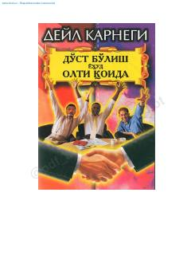

DODo'st orttirish va insonlar bilan samarali muloqot qilish sirlari haqida qo'llanma.
Ushbu kitob muallifi Dale Carnegie insonlar bilan samimiy munosabat o'rnatish va do'st orttirishning samarali usullarini tushuntiradi. Asarda boshqalar bilan chin dildan qiziqish va muloqotda o'zini emas, balki suhbatdoshni markazga qo'yish muvaffaqiyat kaliti ekanligi ta'kidlanadi.